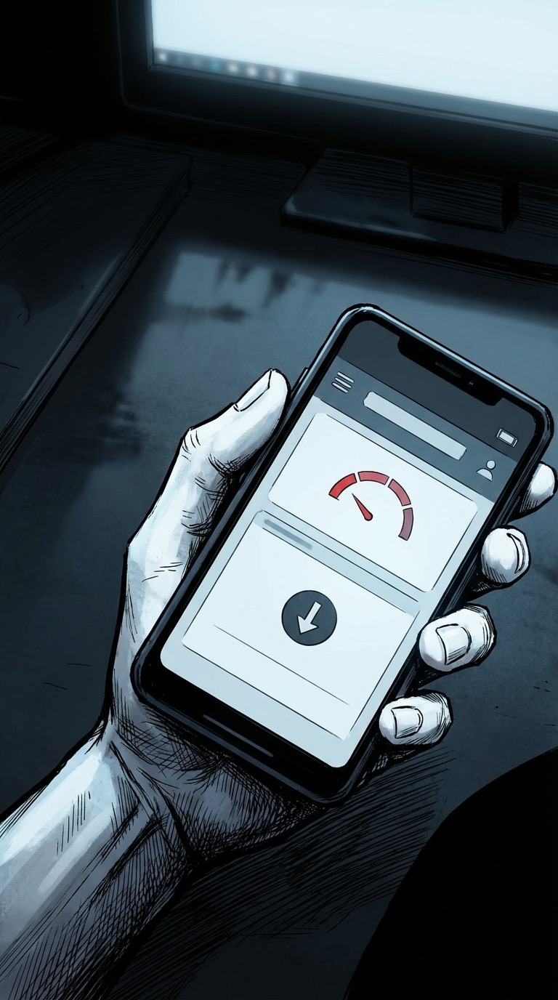
公司账户余额：四十七万一千二百八十三块五毛六。
发完这个月工资，还剩不到三万。
朱江盯着这个数字看了整整三分钟。不是第一次了。
上一次账上见底是2022年，那次他卖了车。
这次没车可卖了。
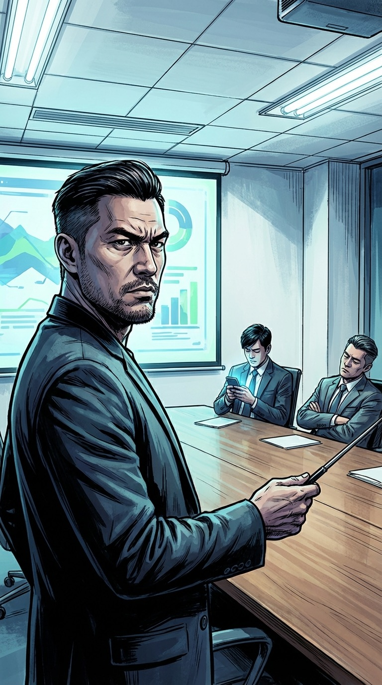
过去两周，朱江跑了8家投资机构。
"AI短剧赛道太卷了。"
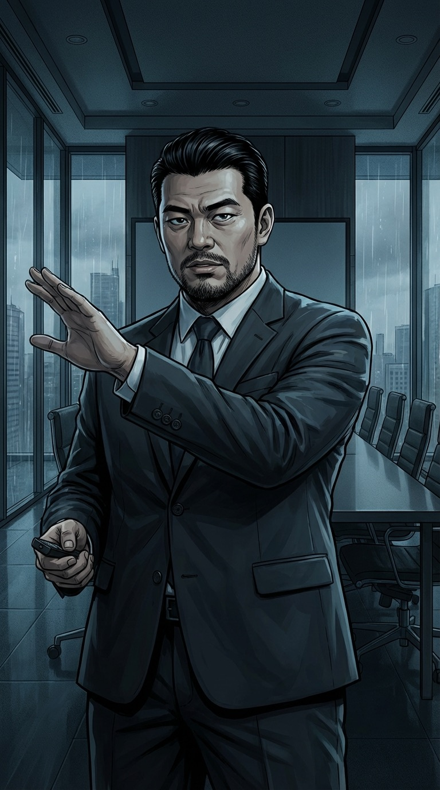
"你们的DAU数据很好，但变现模型不清晰。"
"让我们内部讨论一下。"
——这句话的意思是"别等了"。
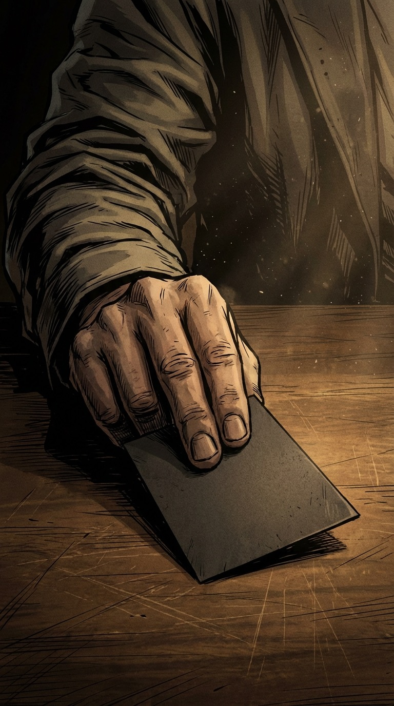
第八家甚至没让他讲完PPT。
"朱总，现在这个环境……"
后面的话他已经能背了。
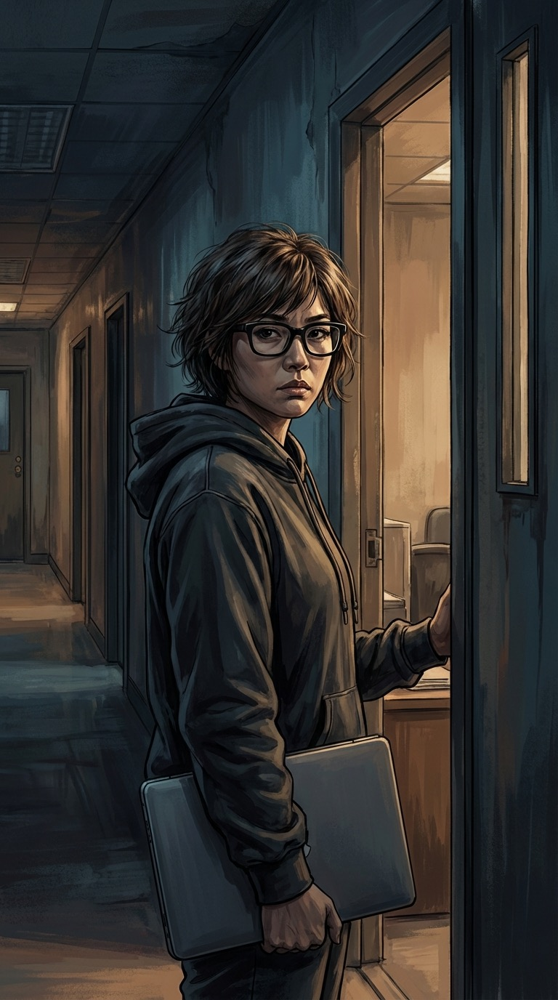
凌晨一点半，苏敏敲门进来。
她平时从不这个点找他。
朱江心里"咯噔"一下。
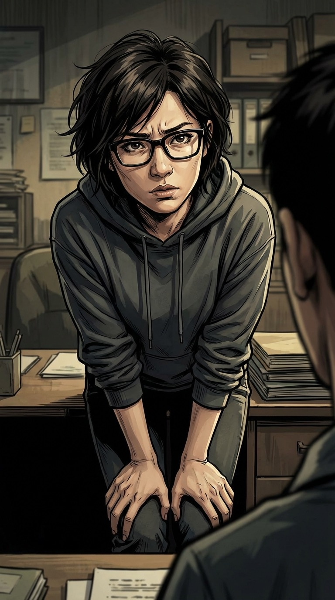
"江哥，我直说了。后端三个人上周都更新了简历，我看到的。"
她停了一下。
"工资再拖一个月，就不是走不走的问题了——是散不散的问题。"
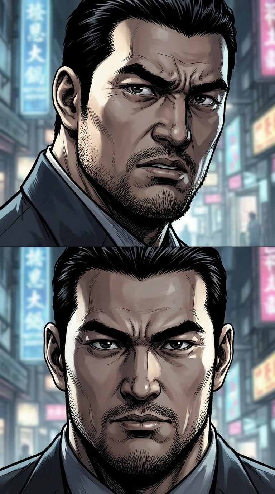
安静了四秒。办公室的空调嗡嗡响。
◆ 决策点 #4
"你走了我连debug的人都没了。"
苏敏没笑。
朱江收起笑："一周。给我一周。"
先沉默消化，然后用自嘲化解——再给出承诺。这是朱江处理压力的方式：真实+温暖+果断。
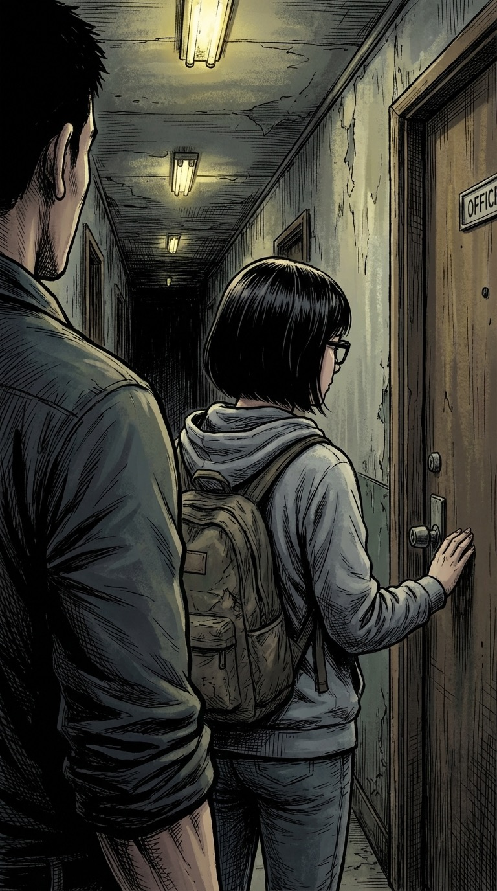
苏敏站起来，走到门口停了一下。朱江以为她要说什么，但她只是轻轻把门带上了。
那个"咔哒"声比任何话都重。
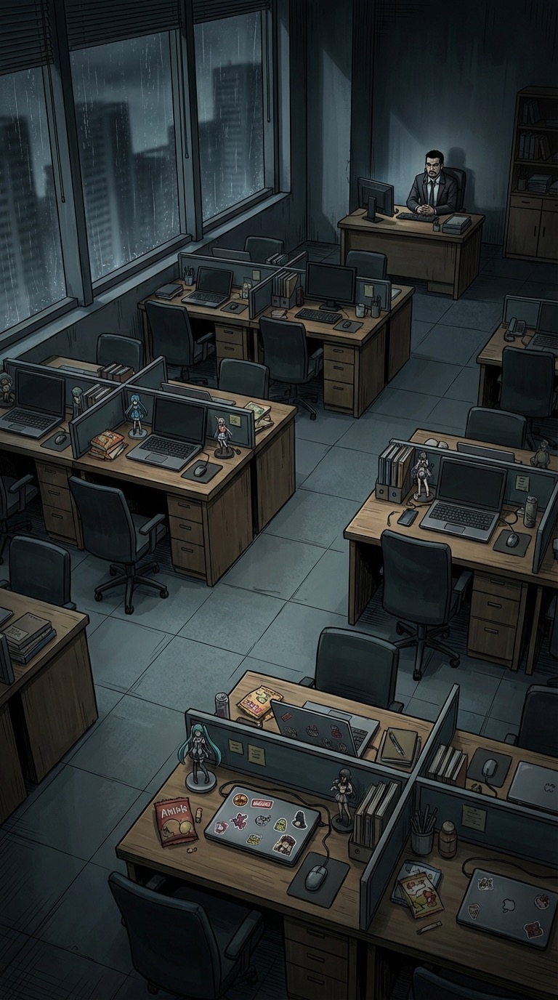
两年前这里坐满了人。产品上线那天大家一起吃的火锅，辣到苏敏打嗝，全组笑了十分钟。
现在20个工位空了14个。
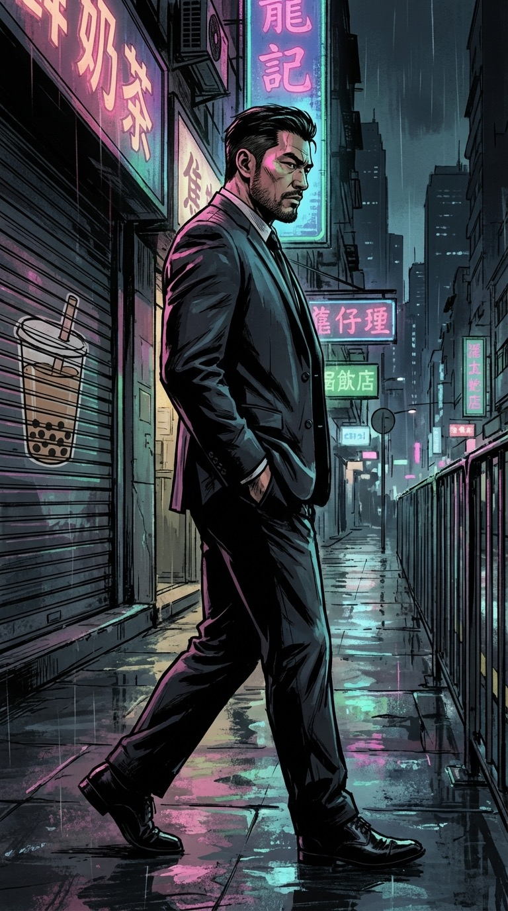
凌晨两点的上海。
朱江决定去喝一杯。不是借酒消愁——是需要一个"暂停键"。让大脑从"怎么办"模式里切出来三十分钟。
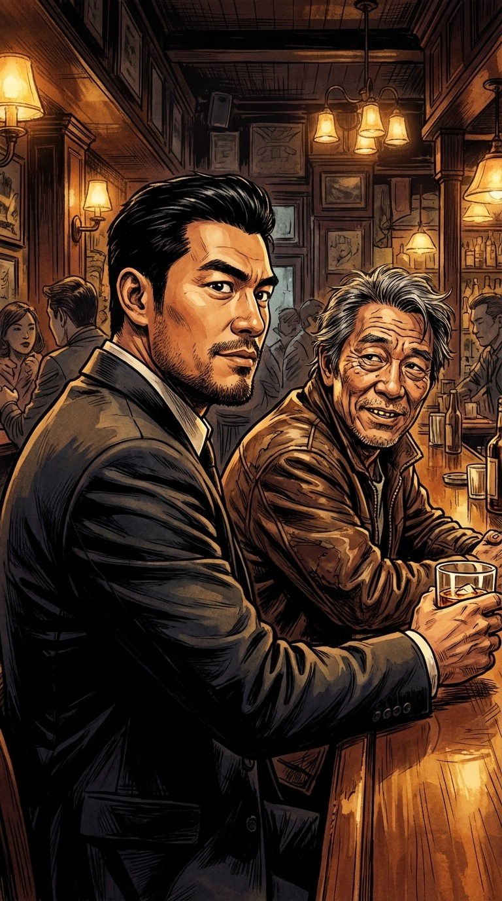
朱江正想叫第二杯，旁边传来一个声音：
"小朱？朱江？"
他转头。老陆。五年没见的老陆。当年给他投了第一笔天使的老陆。
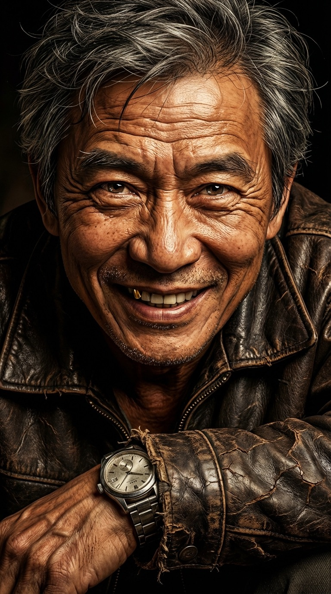
老陆胖了一圈，金牙也是新的。但那件皮夹克朱江认得——五年前签投资协议那天他就穿着这件。
"陆叔？您怎么……"朱江想说"您怎么在这"，但看看自己凌晨两点独自喝闷酒的样子，觉得没资格问别人。
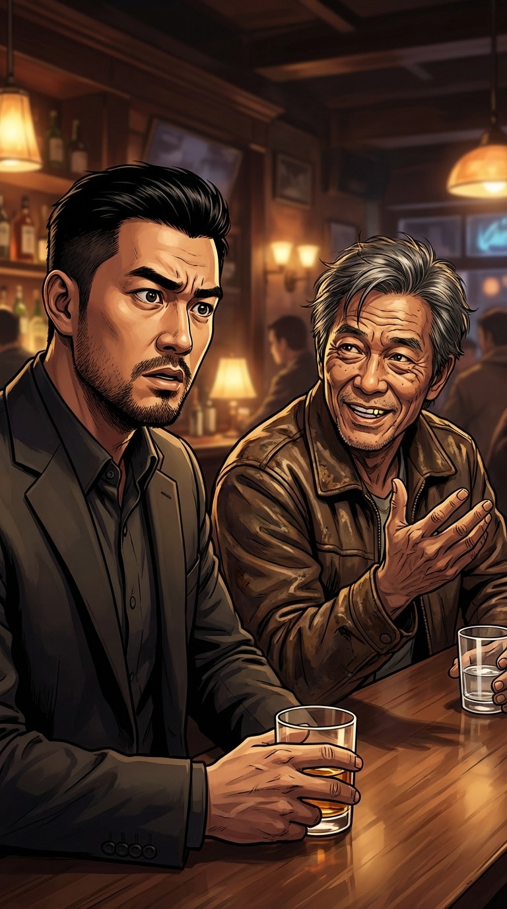
三杯酒下肚，老陆把这几年的事说了。房地产暴雷，投的项目血本无归，老婆跟人走了。现在靠打德州维生。
"别用那种眼神看我，"老陆笑着说，"我一个月赢的比你给我的天使回报还多。"
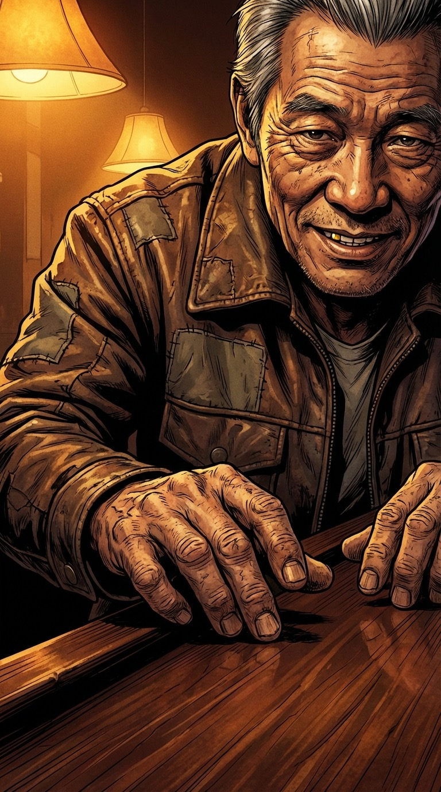
老陆突然认真了：
"小朱，我记得你大学时候打牌很厉害。"
朱江愣了一下："那都多少年前的事了。"
"你那个感觉还在。我看人看了三十年，从没见过谁读牌读得跟你一样。"
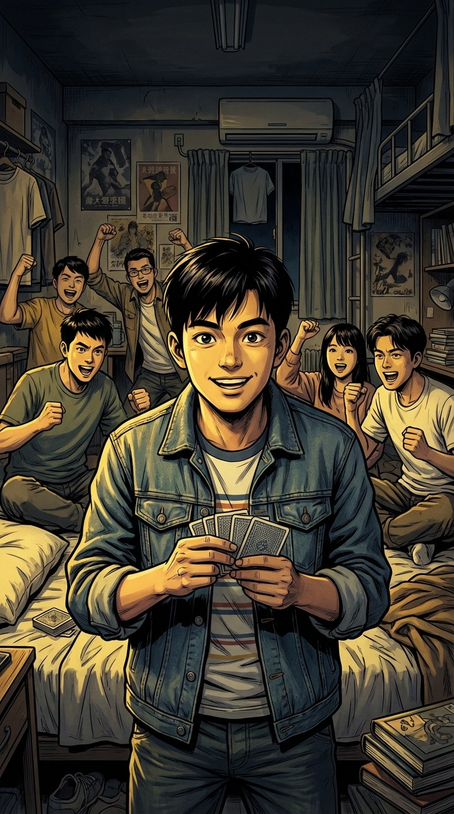
大三那年，朱江在宿舍楼里打遍了整栋楼。不是因为牌技好——他数学确实强（高考数学营口市第一），但更多的是一种说不清的"感觉"。
他能看出一个人在紧张，在兴奋，在装。老周说他是"人形测谎仪"。
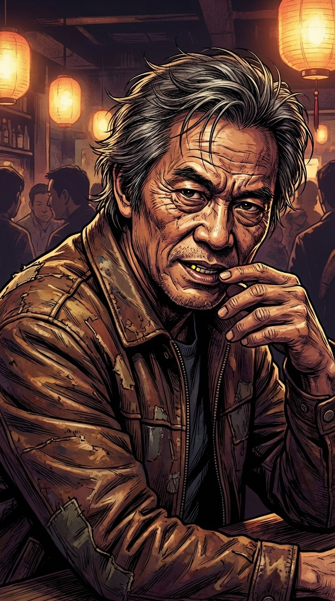
"后天有个局。私人的，买入五万。对你来说不算大钱，但如果赢了——"
他竖起三根手指。
"三十万起。"
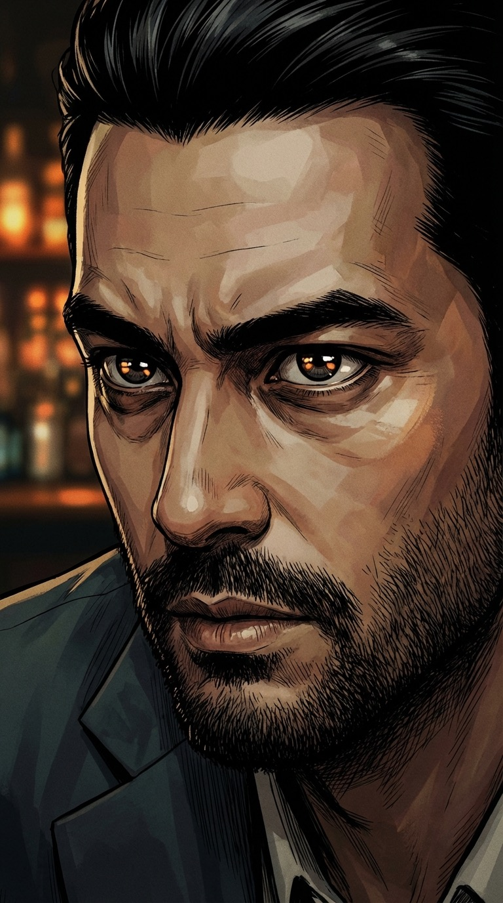
五万。公司账上还有四十七万。拿五万去赌。赢了，多三十万，能撑三个月。输了，少五万，反正也是死，早死晚死的区别。
朱江发现自己在用创业的逻辑算赌博的账——预期收益、风险敞口、破产概率。他大学学的概率论从来没用在这种场景里。
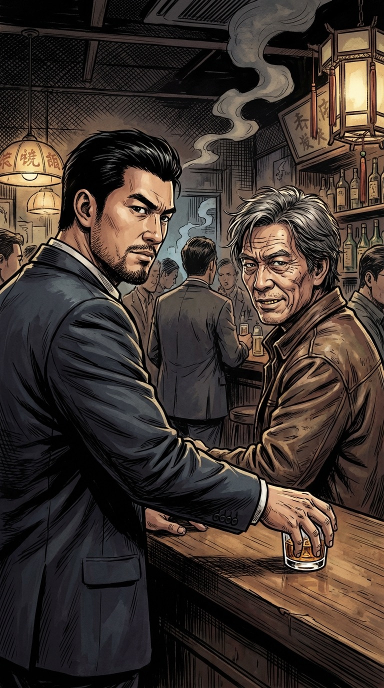
◆ 决策点 #1
朱江把杯子里最后一口酒干了。
"几点？在哪？"
老陆笑了，那种"我就知道"的笑。
"后天晚上八点，我来接你。"
用公司的钱入局。不是冲动——是计算过的冒险。四十七万和四十二万，对一个快死的公司来说没有区别。但多出来的三十万，有区别。
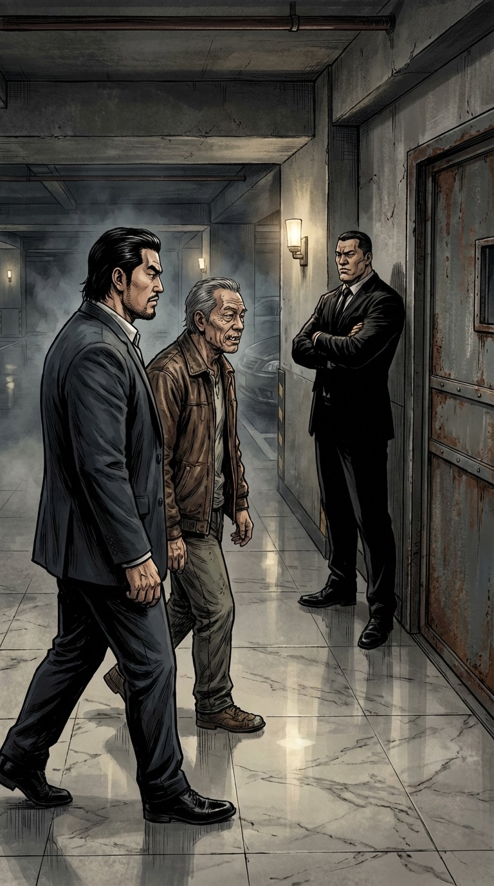
后天晚上。老陆开车把朱江带到了城西一栋不起眼的商务楼。从B3停车场的一扇铁门进去，穿过走廊，到了一部需要刷卡的电梯前。
"放松，"老陆说，"跟谈融资一样，别让他们看出你缺钱。"
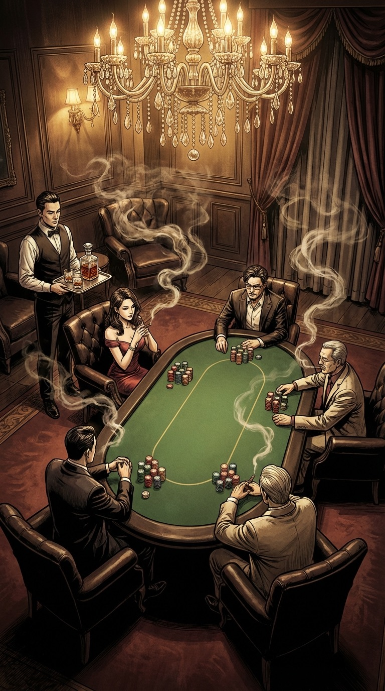
电梯门打开的那一刻，朱江闻到了雪茄和皮革混合的味道。
他上一次闻到类似的味道，是在某个美元基金的合伙人办公室。钱的味道总是相似的。
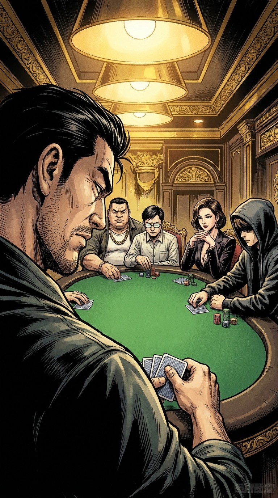
六个人的桌子。朱江坐在3号位。
1号位是个戴金链的胖子，每次洗牌都要先摸一下链子——迷信。
2号位眼镜男，筹码码得整整齐齐——强迫症型，打法保守。
4号位女人穿Chanel，指甲是新做的——不差钱来玩的。
5号位沉默的年轻人，连帽衫，看不出什么。
6号位——
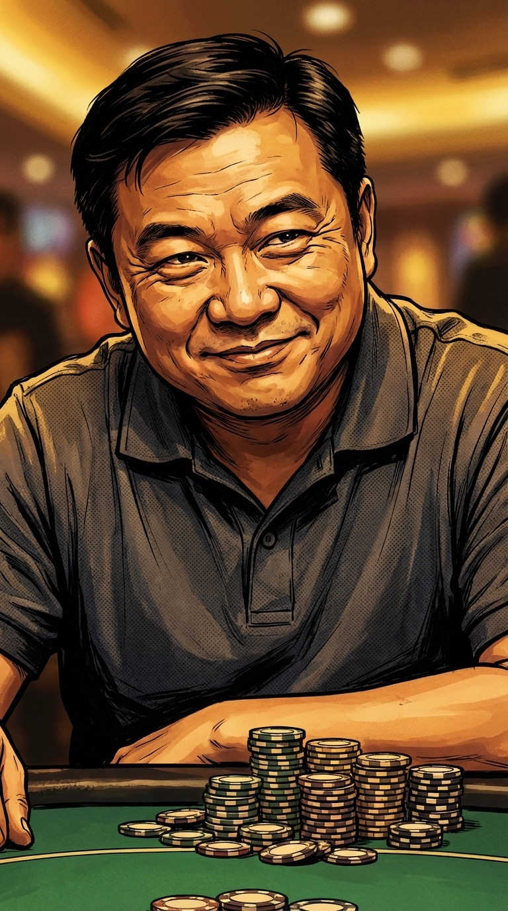
6号位。老陆提前说过这个人——"赵总"。做工程的，牌桌上的常客。
"脸上永远在笑，手底下从来不留情。"
朱江看了他三秒。赵总也在看他，笑着微微点头。那个笑容让朱江想起了当年拒绝他的第三个投资人——同款假笑。
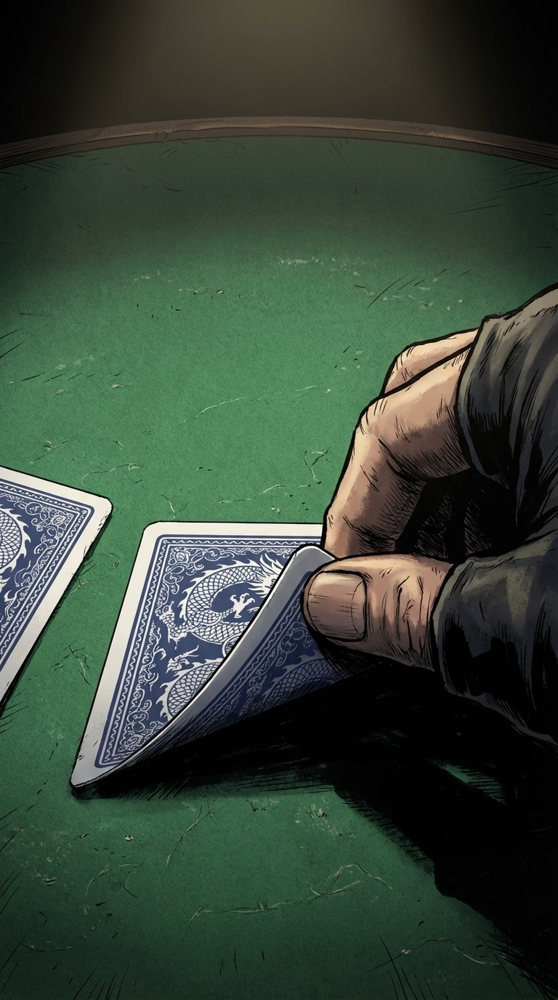
前三手，朱江都fold了。不是因为牌差——是在看。
看每个人拿到好牌时的微表情，下注时的手指动作，思考时的呼吸节奏。这是他大学时候的老习惯：前十分钟不打牌，只读人。
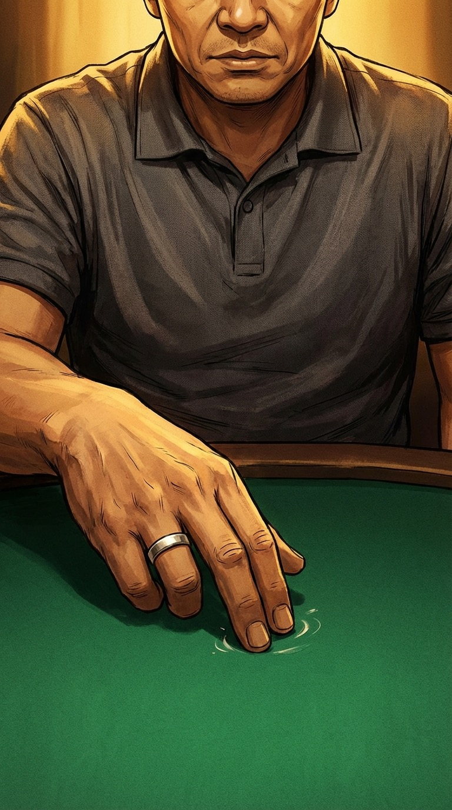
第四手。赵总加注到三万。朱江注意到一个细节——
赵总右手推筹码的时候，左手无名指在桌面上轻轻敲了一下。很轻。像心跳。
朱江没动，继续看。第五手，赵总只是跟注。左手没动。第六手，赵总又加注——左手，敲了。
加注时敲，跟注时不敲。朱江心里有了一个假设。
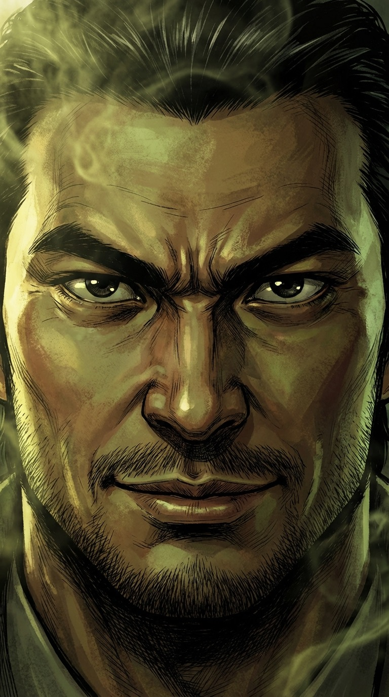
又过了两手。赵总第三次加注，左手无名指——敲。翻牌：赵总的牌很差。他在bluff。
朱江确认了：敲桌面 = 虚张声势。
这不是赵总有意的动作——这是他潜意识在紧张时的释放。赵总打了几千手牌，没人发现过。
但朱江发现了。高考数学第一名不是白考的——本质上这是pattern recognition。
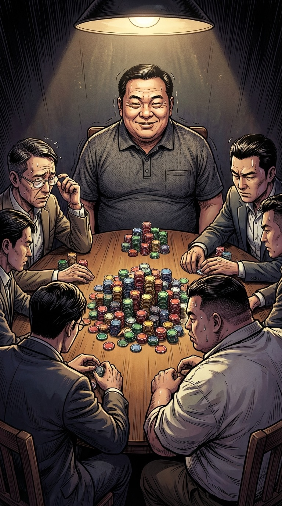
第十二手。底池已经到了八万。前面四个人依次fold。
剩下朱江和赵总。
赵总看了一眼自己的底牌，然后看了朱江一眼。笑容没变。
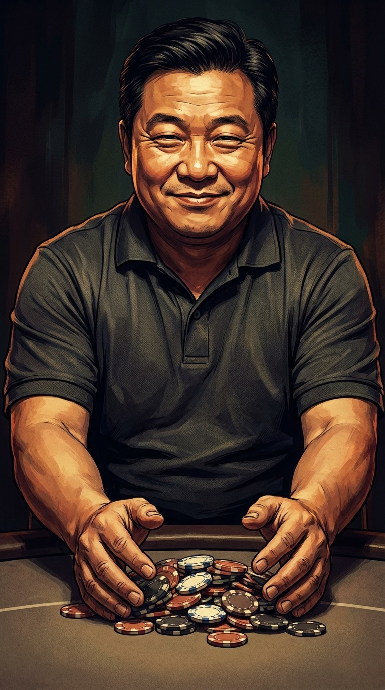
赵总把所有筹码推到中间。
"All-in。"
语气像在说"今天天气不错"。
朱江看了一眼桌面——赵总推进去了大概三十万。如果朱江跟，他需要把自己所有筹码都押上。赢了翻倍，输了清零。
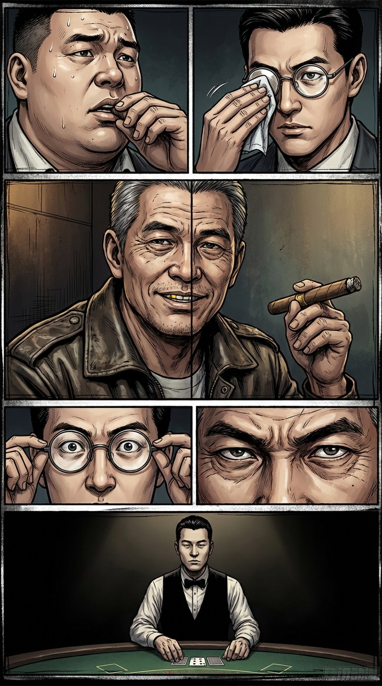
所有人都在看朱江。
老陆在角落站着，手里的雪茄忘了弹烟灰。
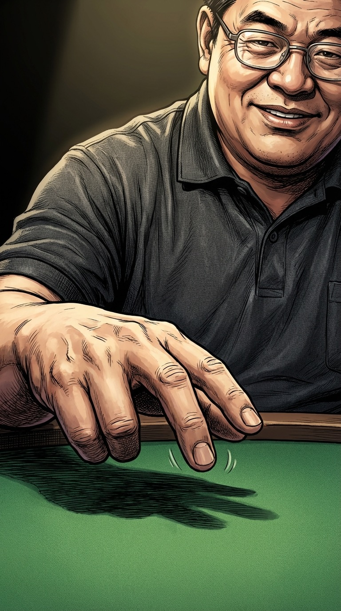
朱江没有看自己的牌。他在看赵总的左手。
三秒。
赵总的无名指——敲了一下。
朱江心跳加速。他在虚张声势。
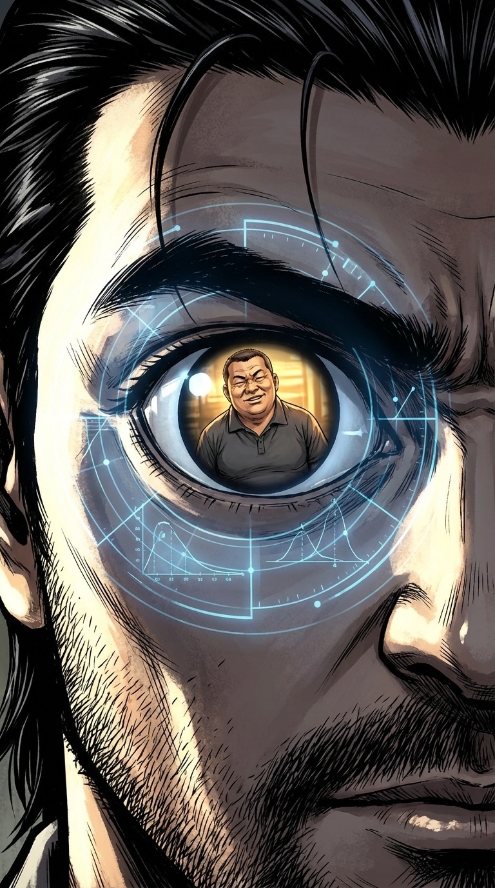
大脑在做两套运算。
理性面：手上只有一对9，胜率大约35%。如果赵总是真的，必输。
直觉面：他的破绽出现了。十二手牌验证过三次，准确率100%。
35%是数学的胜率。但如果对方在虚张声势，真实胜率超过80%。
问题是——你愿意拿公司最后的钱，赌在一根手指头上吗？
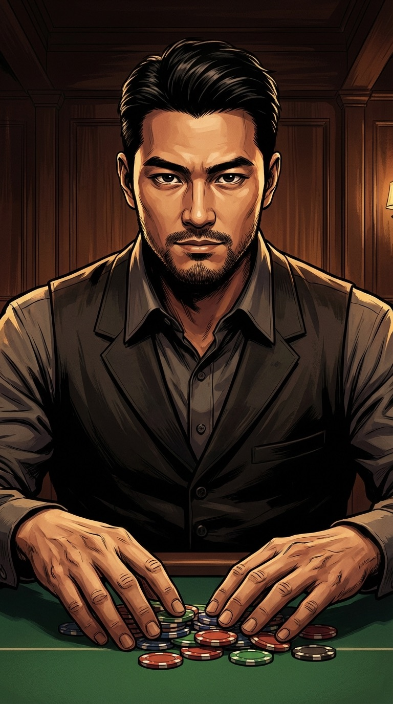
◆ 决策点 #2
朱江把筹码推出去。
"跟。"
声音很平。像在给投资人报数据一样平。
老陆在角落松了一口气——还是没松，他屏住了。
相信直觉。不是赌——是验证。跟做产品一样，有数据支撑的假设，值得下注。
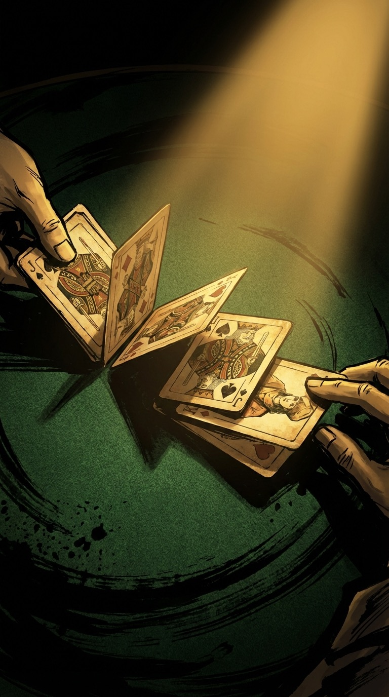
荷官翻牌。
朱江：三条9。
赵总——高张空气牌。他真的在虚张声势。
满桌安静了两秒。
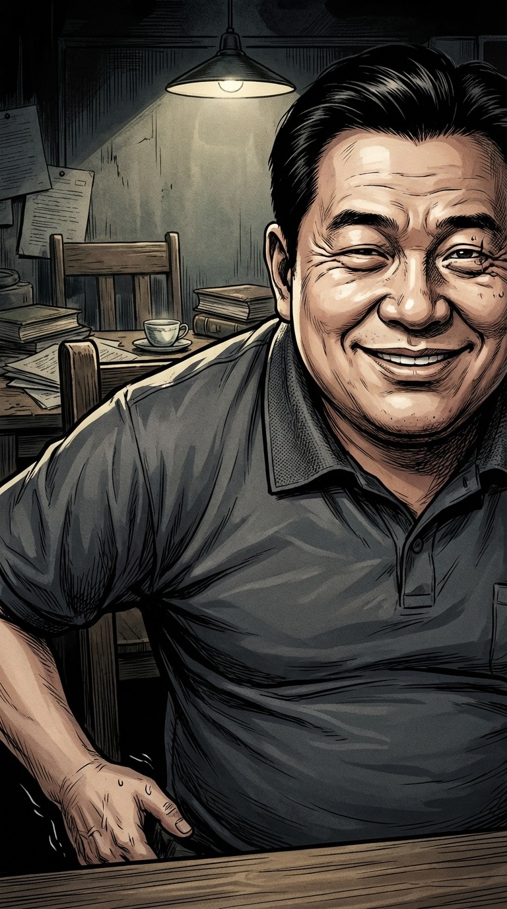
赵总的笑容消失了零点五秒。然后又挂回来了。
"运气不错。"
但他把椅子往后推了三厘米——不想被人看到手在发抖。
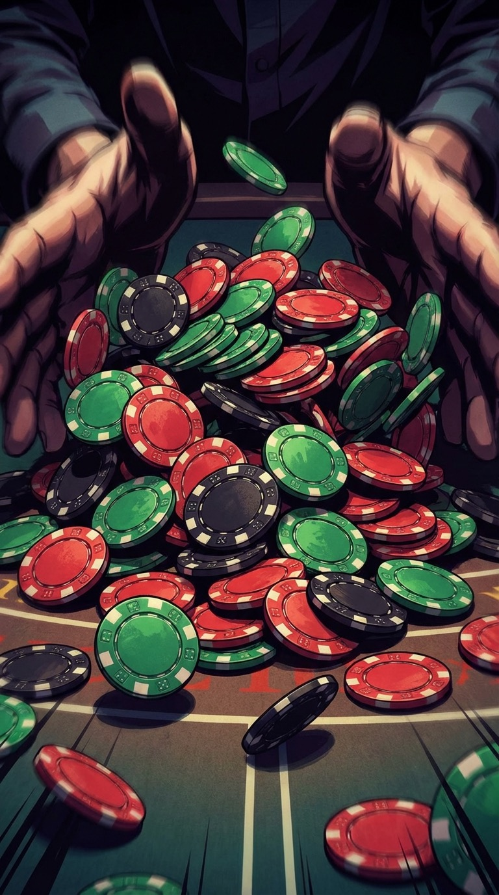
荷官把筹码推到朱江面前。三十八万。
加上他之前赢的零碎，今晚净赚差不多三十八万。他的手没抖——不是不紧张，是在忍。
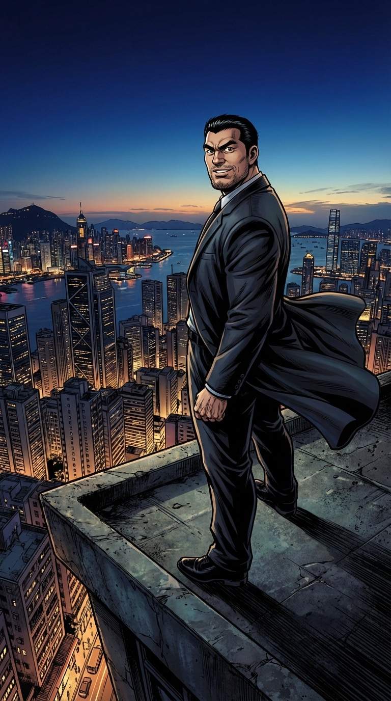
凌晨四点半。朱江站在天台上，上海的夜景在脚下铺开。风很大。
他点了一根烟——他平时不抽烟。
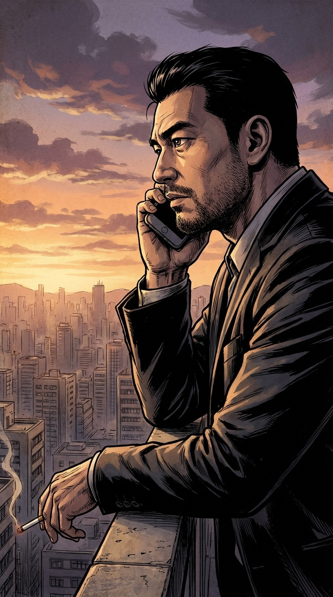
◆ 决策点 #3
"先不用担心了，"朱江说，"有个朋友帮忙周转了一下。先把这个月的工资发了。"
电话那头安静了几秒。
"……什么朋友？"
"以前的投资人，老关系了。"
含糊带过。不是撒谎——老陆确实是以前的投资人。但朱江不能说实话。为了保护团队稳定，独自承受压力。
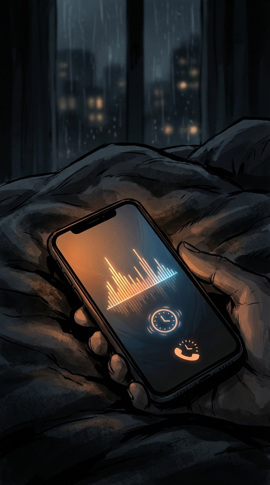
苏敏沉默了五秒。朱江知道她没信。苏敏是写代码的人——对逻辑漏洞的嗅觉比投资人还敏锐。
但她选择不追问。
"好。那我先安排财务。"
电话挂了。
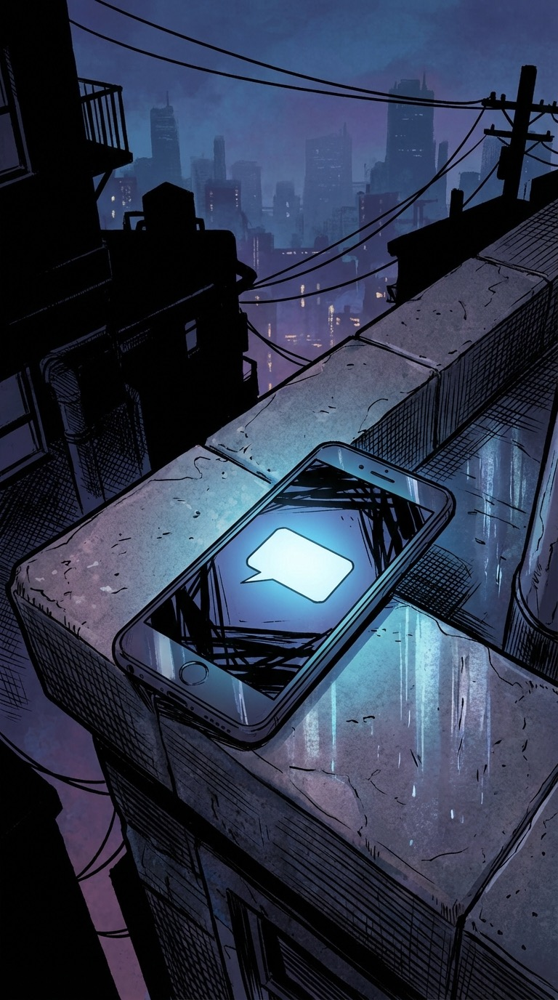
刚挂苏敏电话，微信弹了一条。老陆发的。
"小朱，后天有个更大的局。上次桌上几个人点名要跟你打。你来吗？"
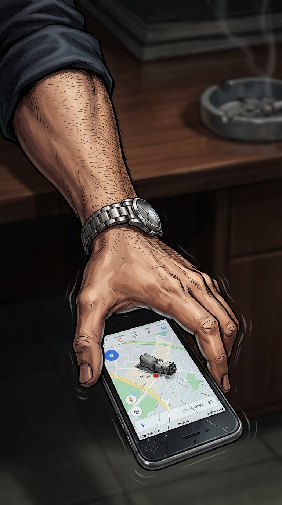
◆ 决策点 #5
朱江发现自己的手在抖。不是怕。是……他不确定这是什么。
肾上腺素？兴奋？还是那种做了一件"不该做但做对了的事"之后的混乱感？
矛盾。他同时觉得刺激和自我质疑：
"我到底是在救公司，还是在找刺激？"
他暂时分不清。
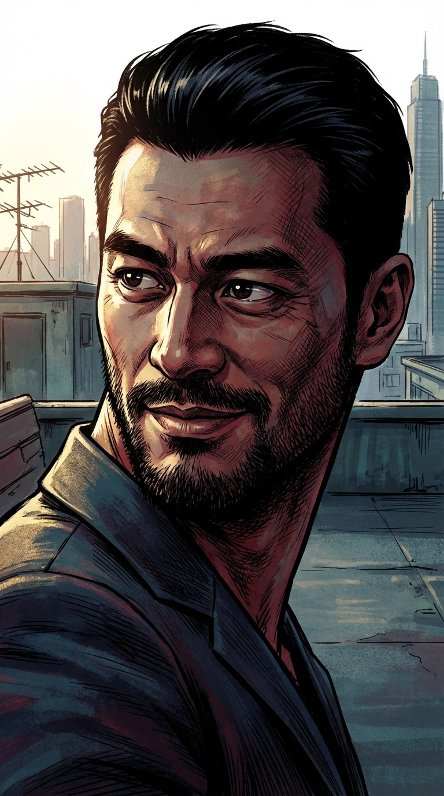
他嘴角浮出一个笑。自己都说不清在笑什么。
也许是因为——三十八万。也许是因为——他发现自己还有这种能力。也许只是因为——很久没有这么心跳加速了。
创业三年，每一天都在"快死了"和"还没死"之间。今天是第一次，他感觉自己活过来了。
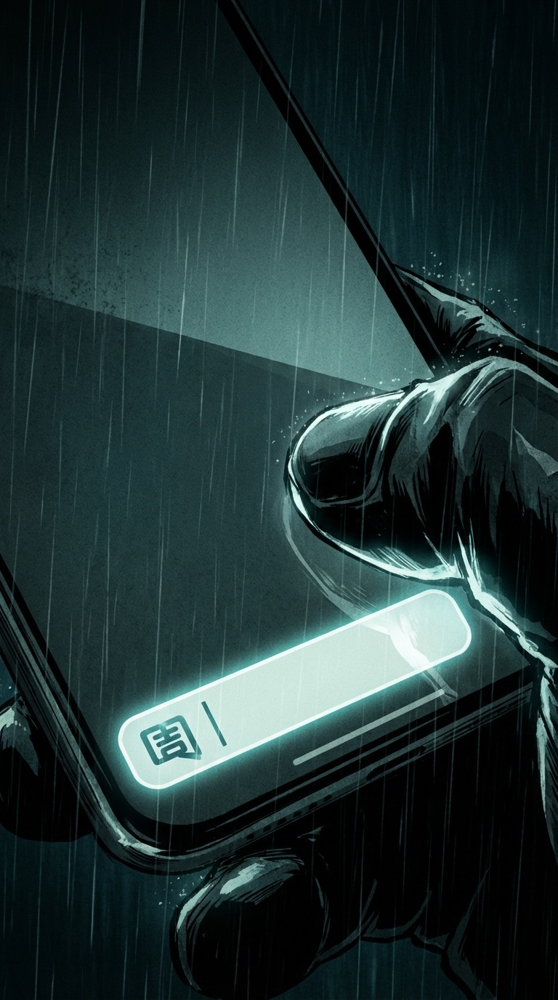
朱江在输入框里打了一个字：
"来。"
光标闪了三下。他没按发送。
天亮了。上海的天从没这么好看过。
也可能是他从没在这个时间认真看过天。
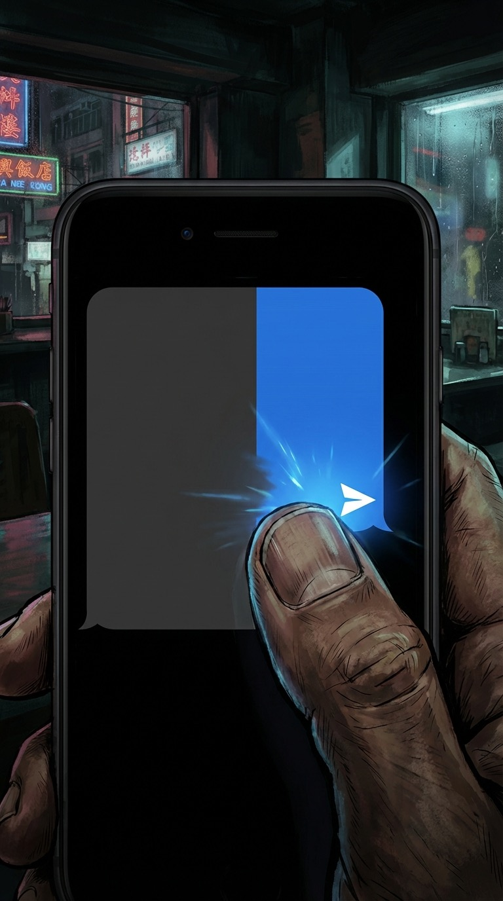
拇指落下。
"来。"
一个字。发送成功。
他把烟头弹到风里。
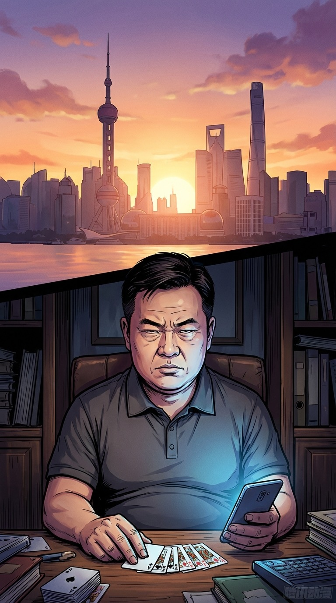
清晨五点十二分。上海醒了。
同一时间。某处。
赵总坐在自己的书房里，面前整齐摆着今晚每一手的复盘牌面。那个3号位的年轻人，读牌的感觉不对劲——太精准了。
赵总拿起手机，拨了一个号码：
"帮我查一个人。姓朱。今晚3号位。"